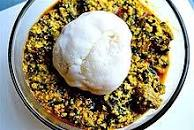

Iyan is the best food in southwest Nigeria

Description
Iyan is a very popular dish in Nigeria and to cook it, you need:
- Flour
- Hot Water
- Little oil
- A steering spoon
The steps are quite simple
- Boil the water well
- Add the flour while steering making sure it evenly spread
- Serve when done